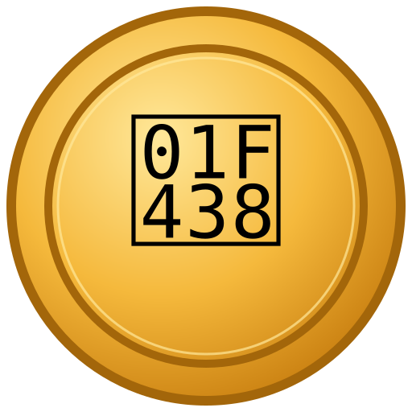

The meme coin for el sapo concho — Puerto Rico's only native toad, endangered and worth saving. Transparent, community-run, and honest about what it is.
Puerto Rico has exactly one native toad: the sapo concho (Peltophryne lemur), a small toad with a bony crest and metallic-gold eyes. It was believed extinct until 1966. Today it is endangered, surviving through the work of conservationists who have reintroduced hundreds of thousands of tadpoles to the island.
CONCHO exists to make that fight famous — a community token where the meme is boricua pride and the mission is real: a fixed share of the project's trading-fee revenue is donated to sapo concho conservation, with every donation published on-chain so anyone can verify it happened.
Conservation partner: to be announced once confirmed in writing. No organization's name is used without permission.
Fixed supply of 100,000,000,000 CONCHO. The contract has no mint function, no owner, no pause switch, no blacklist, and no transfer taxes — these numbers cannot be changed by anyone, ever.
Liquidity locked 12 months at launch (lock transaction published). Team sales announced at least 72 hours in advance. Full details in the tokenomics disclosure.
Don't trust us — read the code. The current (testnet) contract is deployed and source-verified on Sepolia:
CONCHO · 0x01579f88f9D91bd4570aD56dA4D8b142A13C0DeC
Everything — contracts, tests, wallet, the token-gated Concho Club — is open source: github.com/Initium-tech/initiumtec-blockchain-portfolio
When mainnet launches, the one and only official contract address will be announced here and on the official account — anywhere else, assume it's fake.